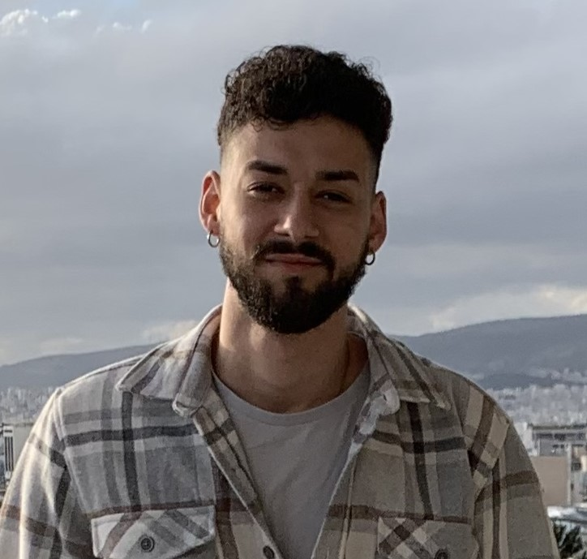

Papagiannis Zisis

Summary
Committed and motivated, focused
on the success of the team,
upholding the company values with
a strong focus on ethics and
professionalism. Polite,
communicative, with social skills
aqquired from previous work
experience
Contact Me
Education
- High School Diploma | 1st General High School of Florin
- University of Macedonia | Appied Informatics 2017 - 2023
Work Experience
- As a waiter at:
- En Plo | Corfu, July 2019 - August 2019
- Aposperitis| Florina, June 2020 - September 2021
- Zanzibar | Sarti Chalkidiki, July 2022 - September 2022
Skills
- MS Office ⦿⦿⦿⦿⦾⦾⦾
- Programming | Java, C, Javascript ⦿⦿⦿⦾⦾⦾⦾
- Markup Language | HTML (CSS) ⦿⦿⦿⦿⦾⦾⦾
- Graphics | Photoshop, Adobe Premiere ⦿⦿⦿⦾⦾⦾⦾
Languages
Other
- Hobbies
- Social Skills
- Communicative
- Patient
- Team Spirit
- Easy Learner